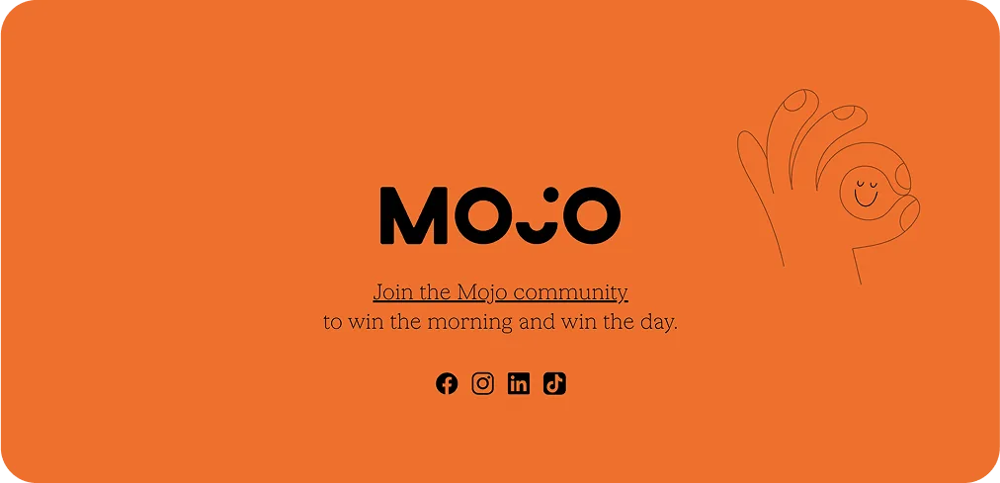
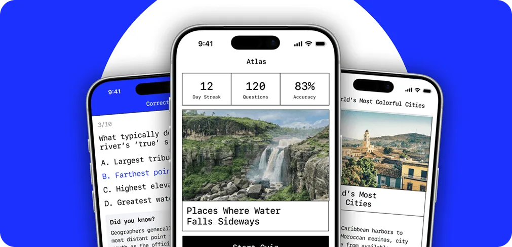

Education, technology & design
Hey it's Jacob, I'm currently designing learning experiences at the Apple Developer Academy Bali.
Moments of learning
Community as Curriculum
How do you get 220 learners to really understand a community they have never met? You send them out to listen. Across 25 communities in Bali, teams sit with real people, ask, and try to see the world through someone else's eyes before they design a single thing.
My real challenge was two sided: building a pipeline of communities willing to open their doors, and equipping learners to take on the hard work of collaboration.
Learn more

My Bali App
How might someone experience their first week at the Academy? By building and shipping their own iOS app in just five days. My Bali App takes brand new learners from a big idea to something real on their phone, fast.
My job was to make five days feel possible, designing the experience with enough support to carry someone all the way to their first shipped app.
Learn moreSelected Work
Selected projects and product design
-
 Mathletics
MathleticsNew courses
A new course structure giving students a clearer path from understanding to reasoning and lasting mastery
-

MojoRepositioning
Repositioned a consumer self development and learning app into an enterprise product, opening a new B2B channel
-
 Mathletics
MathleticsStudent Center
A full student platform redesign that got kids finishing 25% more maths using research backed gamification for consistent practice
-

AtlasGeography Quiz
A short, daily geography challenge, one quiz a day, easy to pick up, built to bring a little learning into a habit people already have

tinkering with..
Always building something new — small tools and education apps, check them out on the App Store.